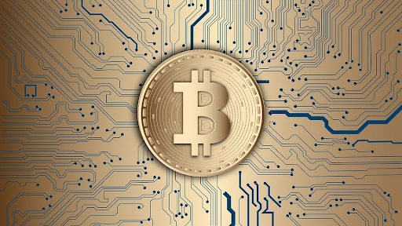

What is web3?
All in all, think of blockchain and crypto as the internet in the 1990s. There’s a lot of hype and a lot of potential but it’s still evolving day-by-day.
The term Web3 will continue to evolve as time goes on but there are a few main components to it including, but not limited to: the Metaverse, NFTs, Blockchain, and cryptocurrencies like Bitcoin and Ethereum. We’ll explore each of these ahead.
Web3? What about 1 and 2?
To give more of an idea of what web3 is and how we got here, let's revisit past iterations. Web 1 is commonly referred to as the early days of the internet, roughly 1991 - 2004. Websites speeds were very slow (most likely on dial-up connections) and there was no user interaction. There were probably very few if any pictures or videos as well.
Web2 is the web we know today, starting in about 2004. In Web2, web pages are more interactive. This includes blogs, comment sections on web pages, and most notably, social media like Facebook, Youtube, and if you remember it, Myspace.
One of the big criticisms of Web 2 is that large tech companies ('Big Tech') like Facebook, Google, and Microsoft have too much power (link: https://geekinsider.com/big-tech-companies-grow-even-as-pandemic-restrictions-loosen/?highlight=tech%20spying). They all own your data and seem to know more about you than even your closest friends and family. Additionally, companies like Facebook have even received criticism for interfering in democracy; this has spurred calls for big tech companies to be broken up.
Enter Web3 - Blockchain
Web3 is where the internet is heading next using blockchain technology. A blockchain is a distributed ledger which no one individual owns or controls. In simple terms, this means recording information among many different computers in a way that makes it impossible to alter or have one single ownership entity. A popular analogy is a Google Doc, which oddly enough is being used right now to write the words you're reading. When a change is made to a Google Doc, it happens simultaneously in real-time, to every person who has access to the doc. Nothing can be changed or altered without each person seeing the changes that have been made. This helps create a verifiable system that each person can trust.
With a web built on blockchain, there is the potential to be less reliant on companies like Facebook and Google and instead have more control and ownership of their online experience.
Cryptocurrencies and NFTs
Cryptocurrencies are a new form of money that will be used as part of the Web3 ecosystem. The most notable one is Bitcoin. Bitcoin runs on blockchain technology making it decentralized and immutable. It solves many of the issues today that we experience with fiat currency like the U.S dollar. There will only ever be 21M coins ever created which prevents inflation eroding purchasing power. Additionally, there are little to no fees for sending Bitcoin. This is a huge advantage to the modern-day system of banking middlemen and the fees that come along the way.
In addition to Bitcoin, you probably have also heard of Ethereum. Etherum is an open-source blockchain that has the capability of running smart contracts–this is a big distinction from Bitcoin. Think of Bitcoin as being digital gold and Ethereum being digital oil. It also allows other applications to run on top of it, including decentralized finance (DeFi) which allows users to borrow against their crypto holdings or lend out their crypto to earn interest like a bank account. (link: https://geekinsider.com/there-are-bonds-on-ethereuem/?highlight=NFTs).
Lastly, a big part of the Web3 space is Non-fungible Tokens otherwise known as NFTs. Non-fungible is just a fancy way of saying unique. There's been a lot of hype around NFTs within the last year, some even going for millions of dollars (link:https://geekinsider.com/the-5-most-expensive-nfts-sold-so-far/?highlight=NFTs). Think of NFTs as the digital version of something which lives in the Ethereum blockchain. For instance, a Michael Jordan rookie card can be minted into an NFT; there is now a digital copy of that rookie card on the blockchain for the public to see, just as described earlier in the Google doc analogy. That NFT could then be divided up into units (like shares of stock) and sold to individual buyers. NFTs are currently in their infancy stage but have huge potential. Don't just take it from me, even celebrities and business leaders are echoing the huge potential. In an interview with Coindesk, Mark Cuban (billionaire celebrity from Shark Tank and owner of Dallas Mavericks) agrees and even sees business opportunities in his businesses: "You can sell anything digital using NFT. We can sell virtual Mavs gear, sneakers, art, pictures, videos, experiences, anything our imagination can come up with we can sell. We are looking at adding virtual jewelry, accessories, and clothing that we create to real pictures in social media. So you can add cool Mavs virtual sneakers that look as real as the ones on your feet to your posts."
The Metaverse
The Metaverse, along with Web3, has also been a buzzword being thrown around lately. The Metaverse brings everything together mentioned previously: NFTs, crypto, and blockchain.

It can be defined as a virtual reality space in which users can interact with a computer-generated environment and other users. Think of it as being in a video-game/cyberspace type of world where you can work, play, and even conduct business. The Metaverse includes gaming, particularly Decentraland, where parcels of digital land are being sold for millions. Imagine owning 5th Ave but in a digital world. The Metaverse includes entertainment, such as going to concerts, where you attend as your online avatar, anywhere in the world. It has the potential to change how we interact with one another and reinvent our online experience.
What's Next?
All-in-all, Web3 is still in its early days; it's currently sitting on the cutting edge of tech and where it's going. It will continue to evolve and incorporate new and exciting projects, but it will hopefully also solve many of the problems we have today in our current online ecosystem. There will surely be much pushback from the current powers-that-be and there will surely be regulation along the way. It will be interesting to see how it all unfolds.

Hi, I'm Richard
I'm a copywriter and content strategist. Learn how to grow your customer base.